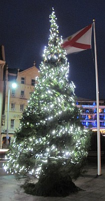

Moussieu l'Editeu,
J'ait tréjous r'mèrtchi que quand veint les temps d'Nouë, la Merrienne est tréjous d'bouonne humeur. J'en profite, comme bein d'autres, car j'n'ai jamais d'peux d'rentré à la maison si j's'y un mio tard au sé, et si, dans l'mitan d'la matinée j'm'en veins m'assèthe aupi du feu ou n'me d'mande pas si j's'y malade ou tchi, mais m'laisse trantchille à fumé ma pipe et à ruminé sûs chein tchi s'pâsse dans l'monde, accordant ès gâzettes. Hélas! si chonna pouvait duthé à londgeu d'année, mais ch'est trop éspéthé, car après l'Jour dé l'An la paix et la trantchilité dispathaisent de siez-nous, et y n'faut un rain pour faithe la bouonnefemme mârri.
Mais, Moussieu, y'a une chose que nou peut dithe de ma Merrinne, et ch'est qu'à fond oulle est d'bouon tchoeu, et touos l's'ans quand veint Nouë oulle est prête à aidgi les gens en dêtrêsse et les bouonnes causes tchi veinnent à sa connaissance. Dêjà, pûs d'une fais j'l'ai veue ramonté à sa chambre pour digoté dans l'fond d'la cauche qu'ou garde à cliet dans un titheux. Ou fait la mine que ch'est pour aut'chose, mais, Moussieu, j'connais ma Merrienne.
Oulle a fait une doûzaine de gâches et je n'sais pas combain de podins d'Nouë, mais ou n'ma pas dit ouèsque tout chonna s'en va.
Y'a une autre chose. Ou dit que quand veint Nouë nou dait pardonné touos ses enn'mis, mais y'a des bordées quand ou n'trouve pas chonna si aisi comme ou voudrait, et mé, comme un imbécile j'mé pliait à l'y pôsé des tchéstchions et mentionné tchiques partitchuliers pour tâchi d'vais si ses principes sont aussi solides comme ou voudrait dithe.
Hier au sé, par éxemplye, j'l'y d'mandit s'ou pouvait pardonné la mauvaise langue d'la Ville-au-Bas tch'y l'avait atchusée y'a tchiques mais d'avé tait d'niet dans l'clios à notre vaisin, ouèsque y s'adonnait qy'y'avait un biau banc d'pais ronds.
"Oui," ou dit, "pour bein qu'ou ne r'quémenche pas, la salope. Autrement, che s'sa une djobbe pour le Chantgni l'Cornu."
Ou m'asseuthit étout qu'ou pardonnait l'bouochi tch'y y'avait envié d'la vieille biche quand ou voulait d'l'agni, ou pardonnait l'peûle tch'y y'avait vendu à la porte deux pathes de cauche de souaie garanties, qu'ou n'put jamais méttre sans les triyi ("Tch'y r'veinne, chu pend'loque-là!" ou s'fit), et ou pardonnait à un cértain individu qu'ou viyait ès Assembliées d'Pâraisse seulement quand y n'y'avait pas tchique femme mathiée dans san district tch'avait besoin d'consolation. ("Il étha san jour, chu fripon-là!" oulle ajouotit.)
Mais quand j'l'y d'mandit si vraiement ou pardonnait l's'Etats d'l'Ile, et souhaitait un Bouon Nouë à touos les membres, ou s'mint à considéthé, et j'vis que j'l'avait minse dans l'embarras. J'attendi pour sa raiponse.
Après une pôse: "Eh bein Ph'lip, tu m'pôse une drôle de tchéstchon là," ou dit, "car y'en a de toutes les sortes dans l's'Etats. Es campagnards, oui, éspéthant quand-même tch'ils éthont pûs d'couôthage l'année tchi veint tch'y n'ont yeu jusque ach'teu, et tch'y s'oppôs'sont à toutes les d'mandes pour de grandes dêpenses. Chein tchi l'y manque ch'est l'couothage de dithe nânin et de dithe contre au lieu d'pour. Mais ach'teu y'a les Députés d'la Ville. Quand j'pense, man Ph'lip, ès braves gens tch'occupaient lûs sièges aut'fais, j'ai mal-au-tchoeu. Hélas! Ouèsqu'y sont nos viers Jurés et nos viers Recteurs?"
"Nou n'les r'vêrra pas, Merrienne," j'l'y dit, "et y faut s'y résigni. Ach'teu, èst-che un Bouon Nouë pour les Députés d'la Ville?"
"Eh bein, oui," ou dit, "mais entre nous, Ph'lip, ch'n'est pas d'bouon tchoeu."
Ph'lip
22/12/1956
Viyiz étout: